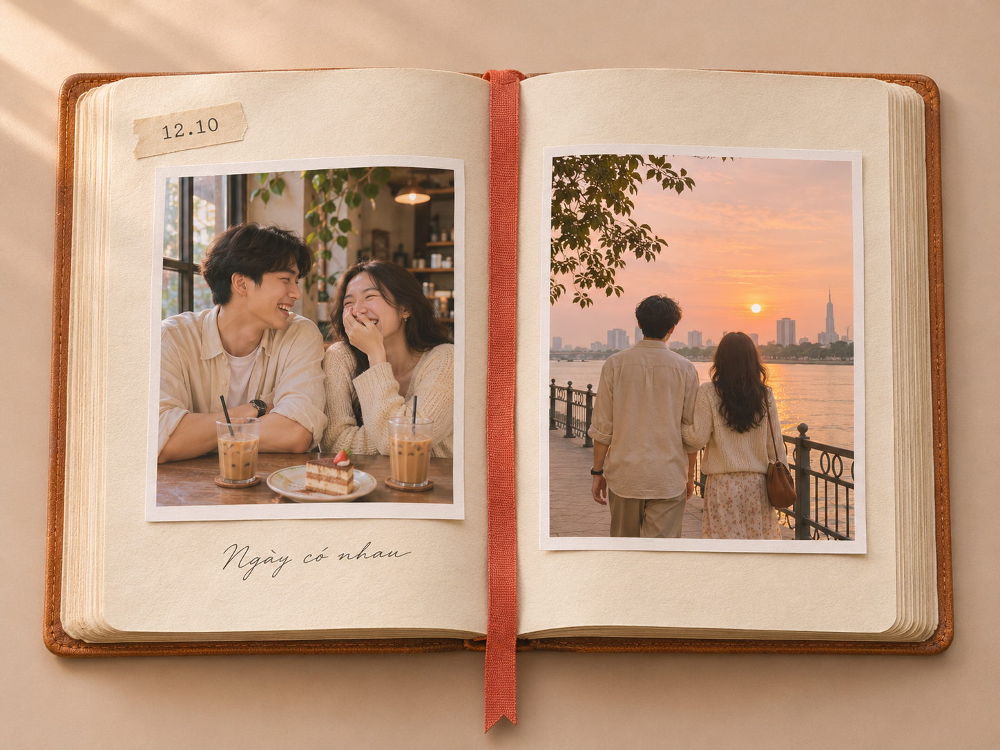
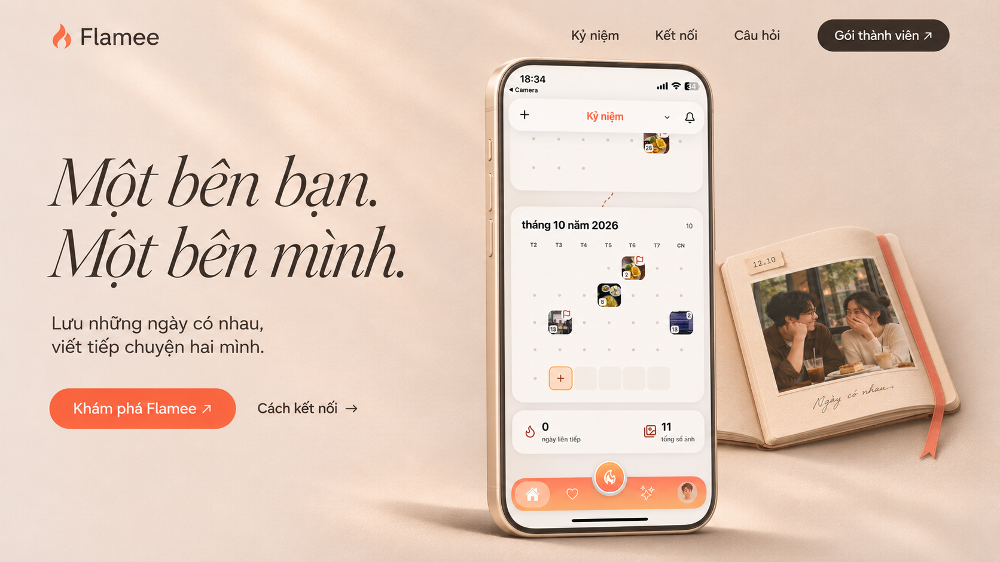
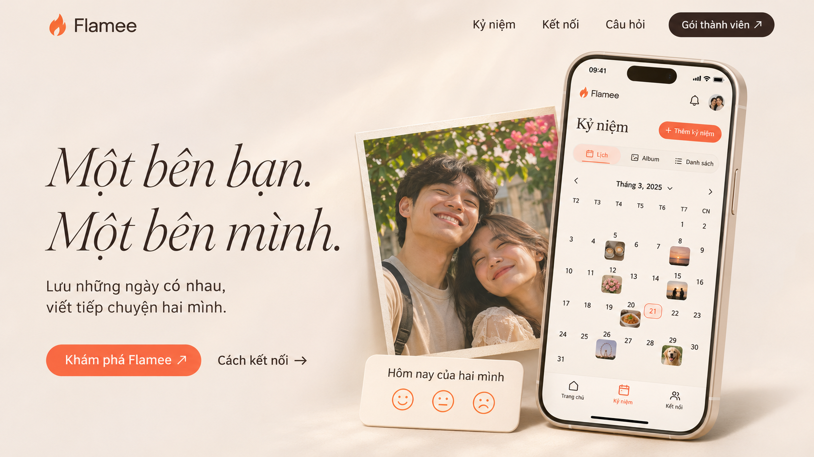
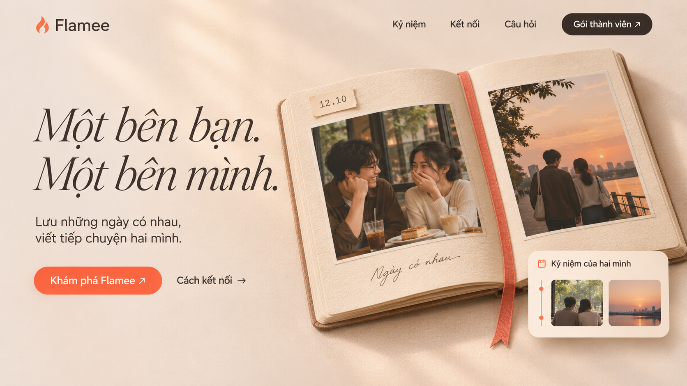
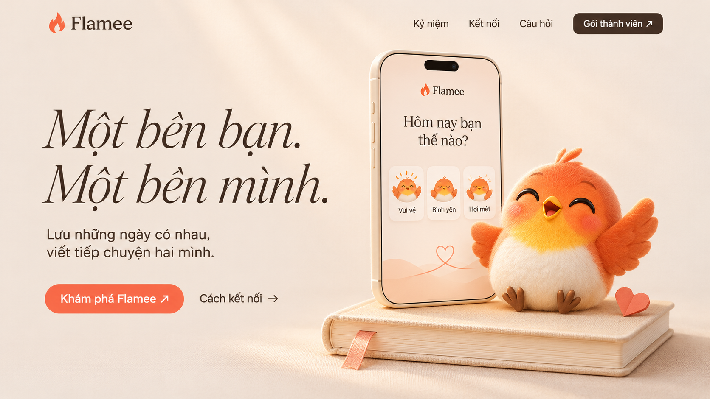

Một bên chữ. Một bên chuyện mình.
Ba hướng hero để duyệt: CTA bên trái, hình ảnh bên phải, tiêu đề serif nghiêng nét mảnh. Cùng nền Warm Linen và cam coral.
Đây là ảnh concept tạo bằng ImageGen. Khi triển khai, logo và screenshot sẽ dùng tài nguyên thật của Flamee.
06 — Sổ bìa da caramel theo prompt
Ảnh tham chiếu tạo bằng ImageGen: góc gần từ trên xuống, giấy kem có vân, ruy-băng coral rộng, ảnh quán cà phê và bờ sông lúc hoàng hôn. Nền beige trơn theo prompt.

Mở ảnh đầy đủ ↗04 — Dòng thời gian + nhật ký
Biến thể từ mẫu 2 theo yêu cầu: giữ CTA và typography, đưa màn hình Dòng thời gian thật vào khung điện thoại; nhật ký là lớp hình ảnh hỗ trợ phía sau.

Mở ảnh đầy đủ ↗01 — App preview
Điện thoại làm trọng tâm, ảnh kỷ niệm tạo cảm xúc. Đề xuất chọn hướng này để giới thiệu sản phẩm rõ nhất.

Mở ảnh đầy đủ ↗02 — Nhật ký hai người
Cuốn nhật ký mở với ảnh và dấu mốc. Tập trung vào cảm xúc, chất liệu giấy và câu chuyện của hai người.

Mở ảnh đầy đủ ↗03 — Mascot
Chú chim cam cạnh điện thoại check-in. Trẻ trung, gần gũi, nhấn mạnh cá tính thương hiệu.

Mở ảnh đầy đủ ↗